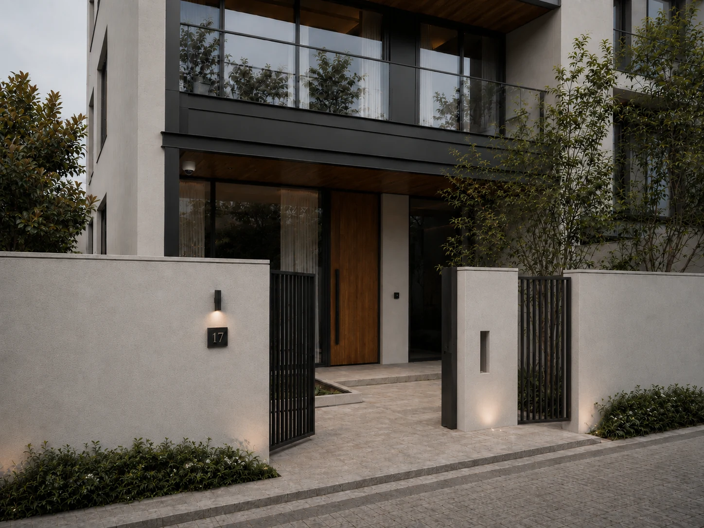
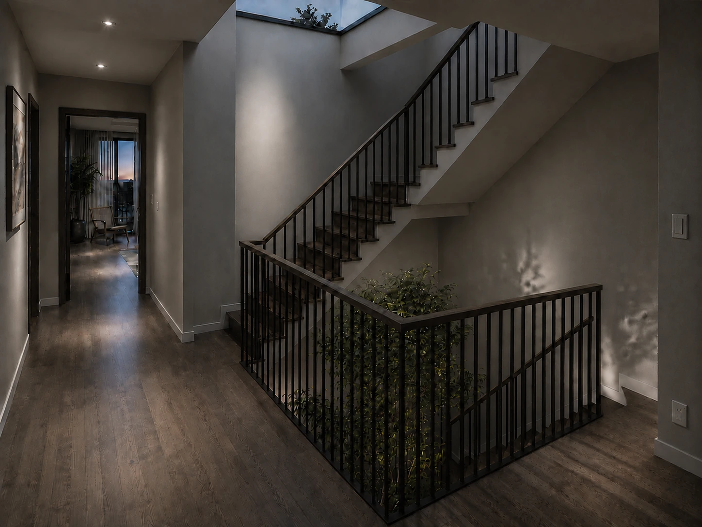
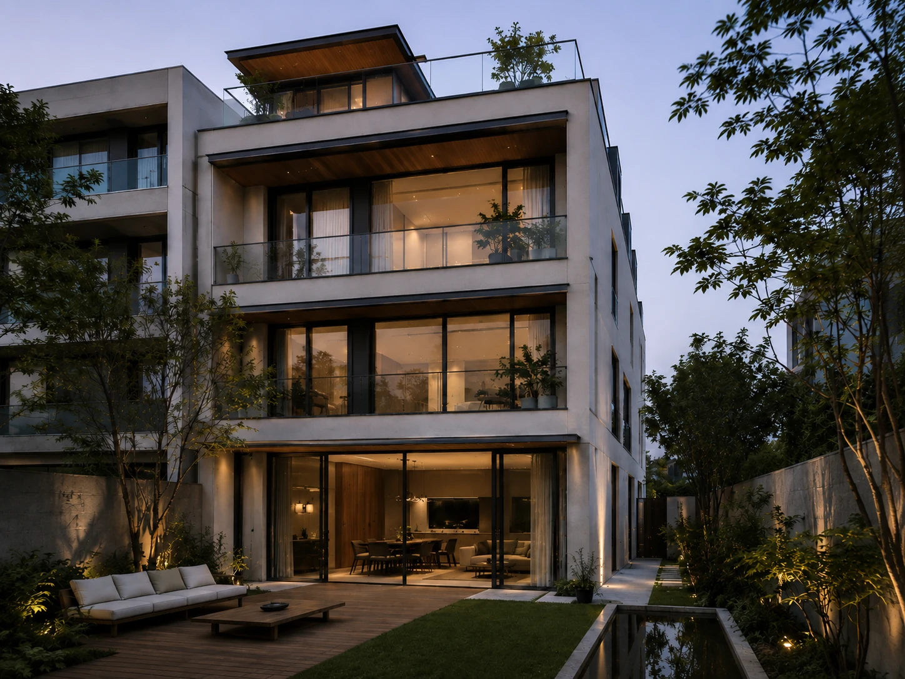
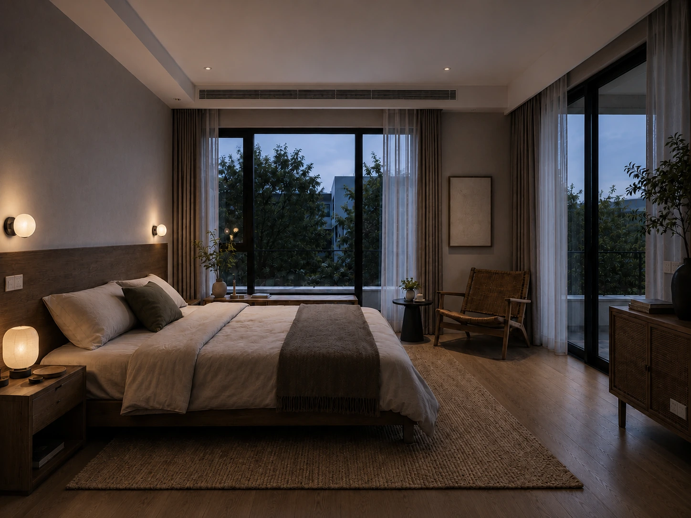
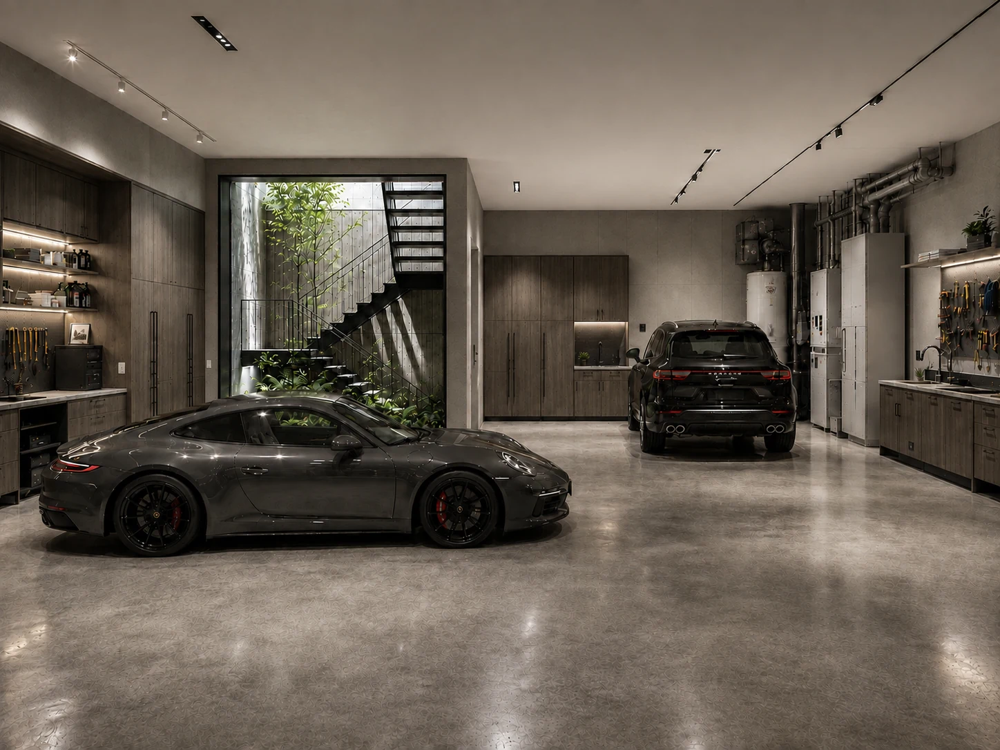
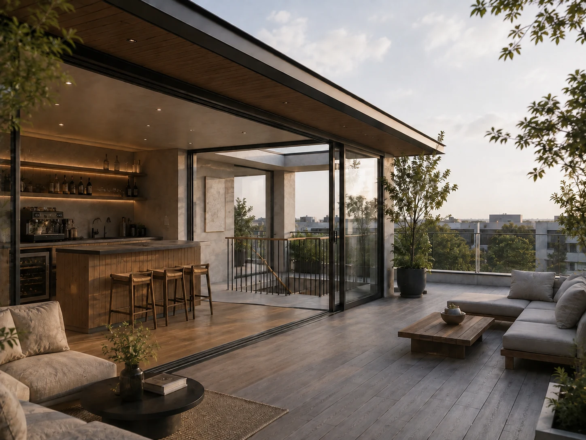
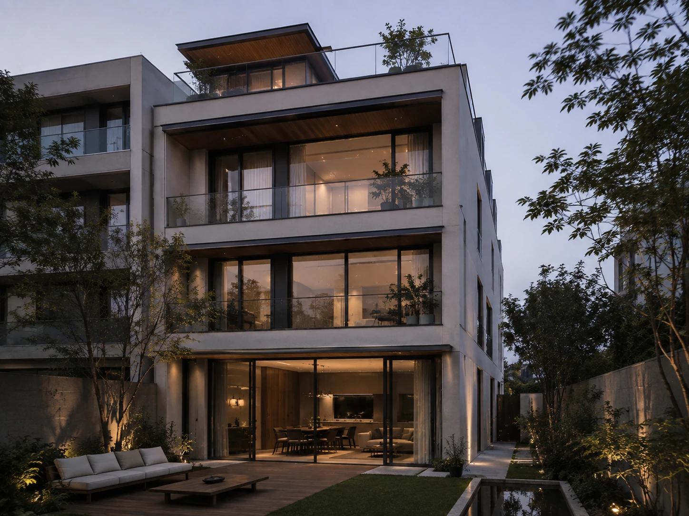

COURTYARD
HOUSE
庭院别墅Biệt thự sân trong
在 9 × 18 米的边套地块上，住宅被拆解为前院、主体、侧过道与后院， 再以中央楼梯天井把地上三层、屋顶和地下两层重新串联。 项目的重点不是单一造型，而是让庭院、光线、植物与垂直交通持续发生关系， 使每一层都能感受到室外与自然光的存在。
On a 9 × 18 m end-unit plot, the house is organized as front court, main volume, side passage and rear garden. A central stair-and-light core links three floors, the roof terrace and two basement levels into one continuous spatial system.
Trên khu đất góc 9 × 18 m, ngôi nhà được tổ chức thành sân trước, khối nhà chính, lối bên hông và sân sau. Lõi cầu thang – giếng trời liên kết ba tầng nổi, sân thượng và hai tầng hầm thành một hệ không gian liên tục.
PRIVACY
BEFORE ENTRY.
前院首先解决的是住宅与街道之间的距离：连续围墙形成私密边界， 树景、细条栏杆、门禁与摄像头共同完成安全与通透之间的平衡。 入口不追求夸张仪式，而以真实尺度、材料和光照建立抵达感。

THE STAIR
BECOMES A LIGHT CORE.
约 3.5 × 3.5 米的楼梯与天井核心，将上下层之间的交通、植物和自然光叠合在一起。 楼梯不再只是连接楼层的设备，而成为住宅内部最稳定的方向感。

HOUSE,
GARDEN, LIGHT.
主图保留住宅主体、庭院与室内外关系的整体表达，作为项目建筑尺度与材料语言的总览。


QUIETER
AT THE EDGE.
私密空间延续米灰、暖木、细黑框与真实绿意，但减少造型动作。 大面窗、阳台和自然织物让卧室从中央天井的垂直秩序转向更柔和的水平视野。
Private rooms keep the same restrained palette while shifting the emphasis from vertical circulation to daylight, views and tactile domestic materials.
UTILITY
WITH DAYLIGHT.
B2 是双车车库与机械、工具空间。中央植物与楼梯核心把自然光带到底层， 木质柜体、设备管线与维修界面则保留真实使用痕迹，使地下层仍属于住宅而非商业车库。

COFFEE INSIDE,
OPEN AIR OUTSIDE.
屋顶被分成室内咖啡与酒吧休闲厅、以及开放露台两部分。 大面积窄边玻璃推拉门让两种使用状态可以随天气切换， 楼梯与采光核心在这里结束，也成为整栋住宅垂直关系的最后一层。


LIGHT CONNECTS THE LEVELS.
COURTYARDS CONNECT DAILY LIFE.